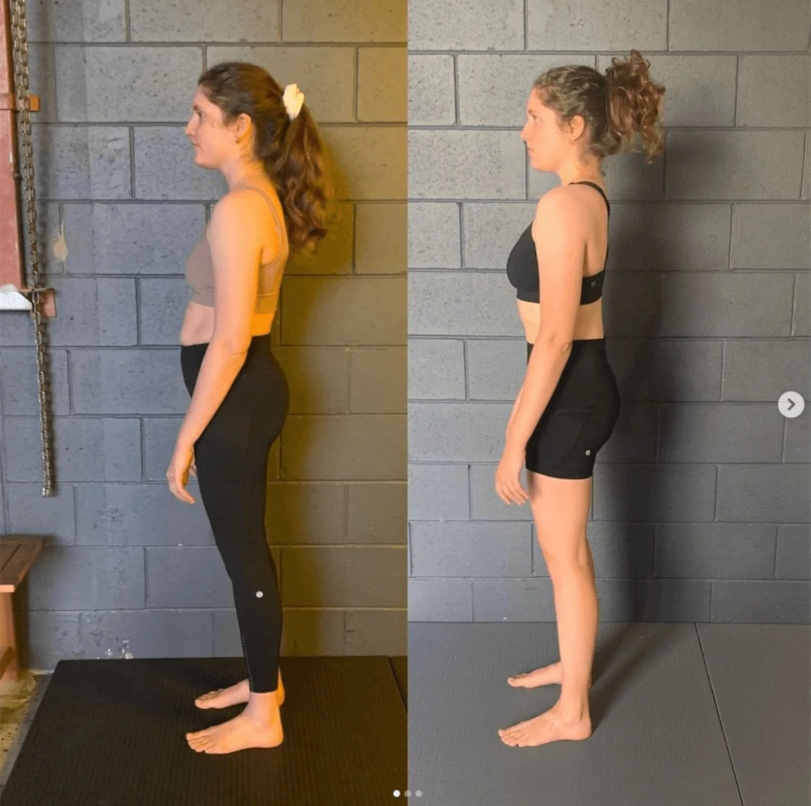

Experiencing hip pain when sitting or lying down is frustrating and disruptive, often leading to restless nights and exhausted days. Whether it's hip pain when sitting, sore hips from sitting too long, or painful hips when sleeping on your side, understanding the root causes is key to finding lasting relief.
Many people think adjusting their sitting or lying positions is the sole solution. But while a new mattress might help temporarily, it’s not just about the position—it's about how your body moves overall. Faulty movement patterns are often the main culprits, leading to chronic hips aching while sleeping that seems impossible to shake.
Why Massage Alone Doesn't Solve Hip Pain
Massage can provide temporary relief for hip aches when lying down or hip discomfort when sitting, but it doesn’t address the root cause. The relief often comes from relaxing tight muscles and increasing blood flow, but this effect is usually short-lived.
Myofascial release (MFR) is a technique that helps by hydrating and softening the soft tissues. However, without correcting the underlying movement patterns, that ache in the hips when lying down will return. Faulty movement—like poor hip rotation—continues to strain the joint. This is why it’s crucial to combine MFR with movement-based techniques that re-train your body, preventing sore hips in bed and persistent pain during the day.

The Anatomy of Sitting and Lying Down
When you sit or lie down, your hips are in a flexed position. This flexion can cause discomfort, especially if there’s inflammation of the bursae—small fluid-filled sacs that cushion the hip joint.
If you have pain on the outside of your hip, it might be trochanteric bursitis. This is a common cause of outside hip pain after sitting or a sore hip when lying on your side. However, the issue isn’t just the bed or the chair; it’s the movement habits that put stress on these areas throughout the day. Poor hip rotation or compensations in the spine lead to that familiar hip joint pain when sitting or the feeling that your hips hurt when you sleep.
Why is Hip Pain Worse at Night?
Many clients ask, " why is hip pain worse at night?" When you're still, the inflammatory markers can pool, and the lack of movement prevents the "lubrication" of the joint. Furthermore, if your mechanics are off, the compression of side sleeping becomes unbearable.
If your left hip hurts when you sleep on it, or you find yourself constantly flipping because of sore hips while sleeping, your body is signaling a mechanical imbalance. When your hips don't rotate correctly during daily activities like walking, the connective tissues become overstressed, leading to burning hip pain at night.
How Movement Patterns Affect the Hips
The hips are designed to rotate. When this is limited, your spine and surrounding muscles compensate, leading to hip pain when standing up from sitting.
This connection extends to your breathing. Poor breathing mechanics, such as shallow chest breathing, can lead to a stiff diaphragm and core, which restricts pelvic movement. When your pelvis locks, it forces the hips to bear more stress in static positions. This results in sore legs and hips at night and pain in the hip joint when lying on your side. By learning to engage your diaphragm and integrating it with core movement, you can reduce the mechanical load that causes aching hips and legs at night.

The Connection Between the Spine and Hip Pain
Your spine and hips are closely connected through the fascia—a network of connective tissue that runs throughout your body. When your spine is out of alignment or when certain muscles are overactive or underactive, it can affect how your hips move, leading to pain.
For instance, if your lower back is too stiff or too loose, it can alter the way your hips rotate, resulting in hip pain when lying on your side or hip aches while sitting. Understanding this connection and addressing spinal issues is crucial for managing and preventing hip pain.
The Impact of Breathing Patterns on Hip Alignment
Another novel aspect to consider is how breathing patterns influence hip alignment and pain. Poor breathing mechanics, such as shallow chest breathing, can lead to a stiff diaphragm and core, which in turn restricts pelvic movement. When your pelvis locks into a restricted position, it forces the hips to bear more stress. This is especially true in static positions like sitting or lying down.
This stress can result in hip pain when seated or pain in the hip joint when lying on your side. By learning to engage your diaphragm correctly and integrating it with your core and hip movements, you can improve your overall range of motion and reduce hip pain. This holistic approach goes beyond what traditional physical therapy might offer. It provides a more comprehensive solution to hip pain when sitting or lying down.
Dysfunctional breathing patterns often stem from deeper, more systemic issues within the body. A primary cause is chronic stress or anxiety. This can lead to habitual chest breathing—a shallow, rapid form of respiration that neglects the diaphragm.
Over time, this maladaptive breathing pattern can create tension in the neck, shoulders, and upper chest. This can lock the diaphragm and preventing it from engaging fully. Another root cause is poor posture, particularly a forward head position combined with a rounded upper back (thoracic kyphosis). This restricts the ribcage and diaphragm's ability to expand fully during breathing.
This restricted expansion forces the body into a state of constant shallow breathing, further reinforcing the cycle of dysfunction. Addressing the underlying postural imbalances and stress responses through integrated movement practices that emphasise proper alignment and relaxation is crucial. By doing so, you can restore functional breathing patterns.
This will not only improve hip alignment but also enhance overall movement efficiency. Further reducing hip pain when sitting or lying down.
Practical Solutions for Side Sleepers
If your hips hurt when side sleeping, addressing the pain involves more than just a pillow between your knees. It’s about changing how your body moves as a whole:
-
Identify Faulty Patterns: Work with a movement specialist to see if your walking gait or standing posture is "pre-loading" your hips for pain at night.
-
Restore Rotation: Improve your hip's ability to rotate so they don't feel "locked" when you hit the sheets.
-
Functional Breathing: Use diaphragmatic breathing to release the tension in the pelvic floor and hip flexors.
Conclusion
If your hips hurt at night or when sitting, look beyond simple fixes. The real solution lies in addressing the underlying movement patterns. By understanding the connection between your spine, breath, and hips, you can move from "managing" sore hips side sleeping to eliminating the cause entirely. Don’t rely solely on massage—combine it with targeted movement retraining to achieve lasting relief.